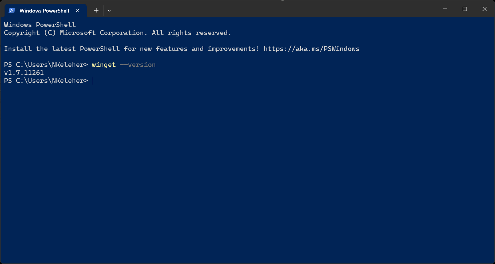

Computer Setup
This page is meant to help guide you in setting up your laptop with common software used by data and technology teams at IPA. Most software covered in this page have their own page in this handbook. We encourage you to refer to for usage of each software. And please contribute to those pages so that others at IPA (including your future self) are able to learn about what works well for interacting with data at IPA.
Refer to the IPA Global Help Desk for general guidance on IPA software and account access.
The information below is for getting started with core software that IPA uses for editing, reviewing, and deploying code for software development, data engineering, analytical solutions, and data infrastructure.
Package Manager
A package manager helps to standardize how you install and update software on your computer. Generally, you want to use a package manager to install any programs that are used globally on your computer. By “globally”, we mean that it is a program that is used across many projects and computing environments.
Windows
If using a Windows computer with Windows 10 or later, we encourage you to use the Windows Package Manager, winget. However, if you do not have Windows 10+, you can achieve a similar package management experience with either chocolatey or scoop.
Check to see if you have winget
- Open Windows Powershell (See PowerShell 101 if new to Windows PowerShell)
- Check to see if you have
wingetinstalled:  - If you do not see a version number for
winget. Follow the Microsoft instructions to Install winget
Install packages on Windows
# Install a single program (e.g. GitHub for command line)
winget install GitHub.cli
# Install multiple programs (Just, pixi for Python)
winget install Casey.Just prefix-dev.pixiMacOS/Linux
On MacOS, it is recommended that you use Homebrew as a package manager. On Linux you can use Homebrew or Snap. This may be relevant if you are working in the Windows Subsystem Linux (WSL).
# Install a single program (e.g. GitHub for command line)
brew install gh
# Install multiple programs (Just, Rye for Python)
brew install just pixiSee the Virtual Environment section of the handbook for more information on using virtual environments.
Additional Software
The preceding package manager examples can be used to install the majority of the software covered in this Handbook. Note that there are some exceptions to software available via a package manager. For example, Stata needs to be installed by first downloading the .exe for Windows, .dmg for MacOS, or .tar.gz for Linux.
Get the required Stata version provided by IPA on the Box installation packages.
Terminal
In Windows, we recommend using the Windows Terminal. However, there are several other options for terminals. Select what you feel most comfortable with. The same is true for MacOS and Linux where there are many Terminal options to select from.
# Windows Terminal
winget install Microsoft.WindowsTerminalShell
You are free to choose whichever shell works best for your workflow and style. Here are the common shell options you may want to consider:
Bash
Bash comes pre-installed with MacOS and Linux. Git Bash is included with the Git for Windows installation.
# Install git for Windows
winget install Git.GitNushell
Nushell is a cross operating system shell with a data pipeline focus.
# Windows
winget install Nushell.Nushell
# MacOS/Linux
brew install nuWindows PowerShell
Windows PowerShell is often the default shell on Windows.
# Windows (install or upgrade)
winget install Microsoft.PowerShell
# MacOS
brew install powershell/tap/powershell
# Linux
# docs: https://learn.microsoft.com/en-us/powershell/scripting/install/install-ubuntuOptionally, you can install Starship for shell prompt customization.
# Windows
winget install Starship.Starship
# MacOS/Linux
brew install starshipFollow the starship installation instructions for using starship with your preferred shell, for example, if using Nushell, run:
mkdir ~/.cache/starship
starship init nu | save -f ~/.cache/starship/init.nuYou can set the Starship configuration to your liking in a ~/.config/starship.toml file. For example you could use the jetpack preset configuration by running:
# starship configuration
mkdir ~/.config
starship preset jetpack -o ~/.config/starship.tomlGit/GitHub
You will need to have git installed on computer if you want to edit, test, or review source code and documentation locally.
We recommend installing GitHub Desktop if you are new to using git or prefer a GUI to the command line.
# Windows
winget install GitHub.GithubDesktop
# MacOS
brew install --cask github
## GitHub Desktop is not available on LinuxSee the Git section of the handbook for more information on using git and the GitHubsection section for more information on using GitHub.
Visual Studio Code
You are free to chose the Integrated Development Environment (IDE) of your choice. However, we recommend Visual Studio Code because integration with GitHub is built in and it provides a rich set of extensions to improve code quality and review.
# Windows
winget install Microsoft.VisualStudioCode
# MacOS
brew install --cask visual-studio-code
# Linux
sudo snap install code --classicSee the Visual Studio Code section of the handbook for more information on using Visual Studio Code.
Quarto
For technical documentation and literate programming, we recommend using Quarto because of it’s rich suite of publishing tools that integrate notebooks (e.g. ipynb, .Rmd), and computer scripts (e.g. .py, .r, .md).
# Windows
winget install Posit.Quarto
# MacOS
brew install --cask quarto
# Linux
# download and install from https://quarto.org/docs/get-started/See the Quarto section of the handbook for more information on using Quarto.